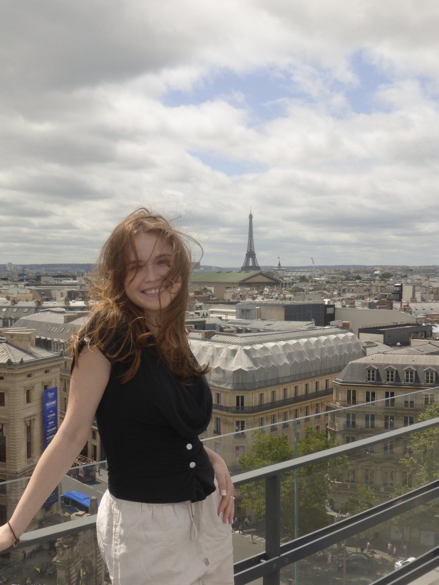
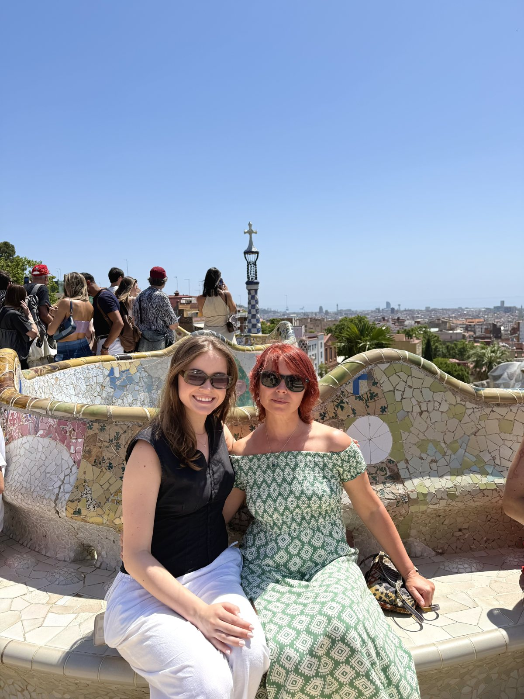
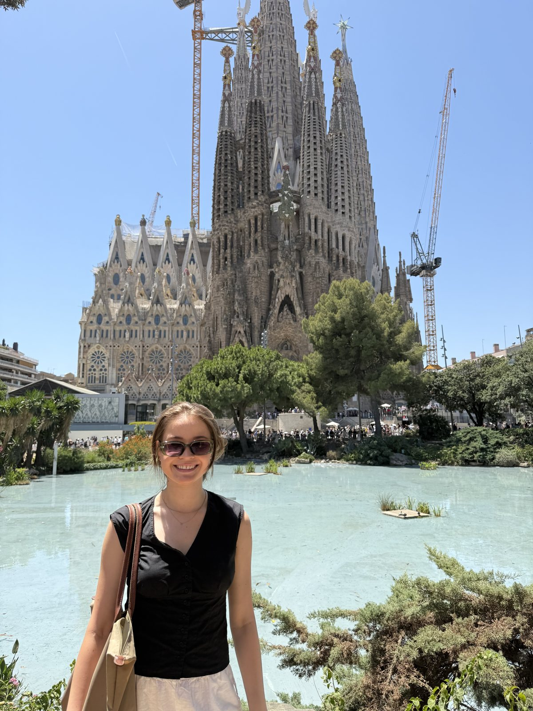
Going somewhere new
I love going to new places! I love the feeling of going somewhere new and realizing how similar we all are.

I’m Neda, a product designer, curious creative, and someone who is always looking at the details.
My path into UX was shaped by art, different cultural perspectives, and a curiosity about how people experience the world.
That’s a big part of why accessibility and inclusive design matter so much to me. Good design should make room for everyone, and I notice quickly when it doesn’t.
Art is where it started. A background rich in different cultures gave me more than one way of looking at things, and I still carry that into my work: asking who a product is really for, and who might be left out.
UX gave me a way to bring those threads together. I’m endlessly curious about people, and I love turning that curiosity into experiences that feel clear, considered, and kind.
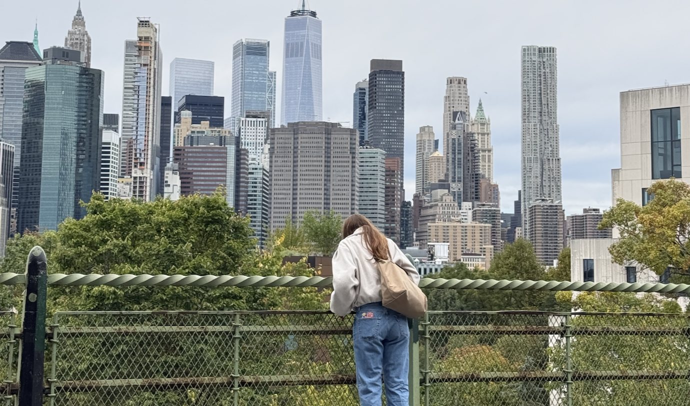



I love going to new places! I love the feeling of going somewhere new and realizing how similar we all are.
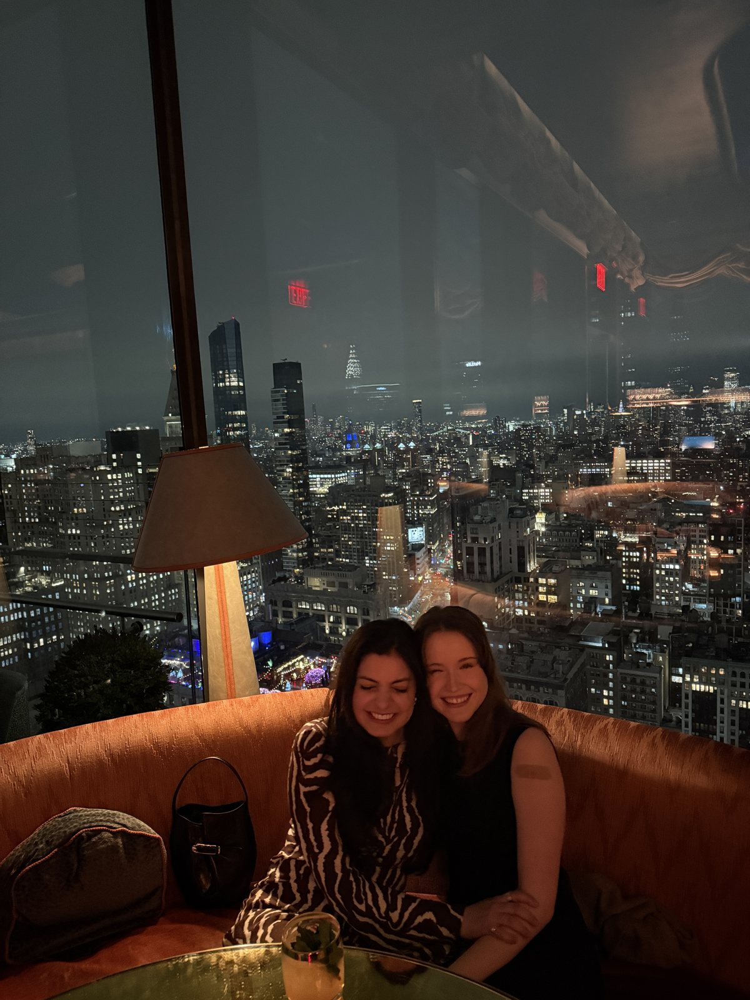
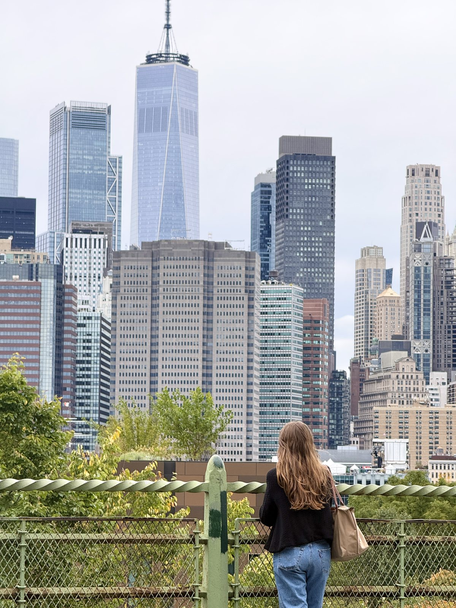
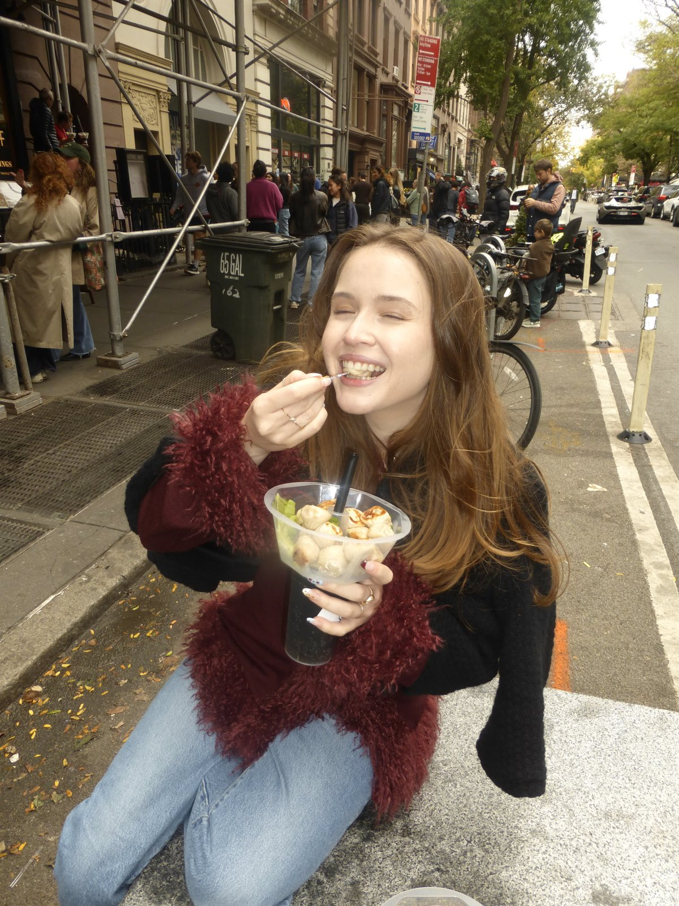
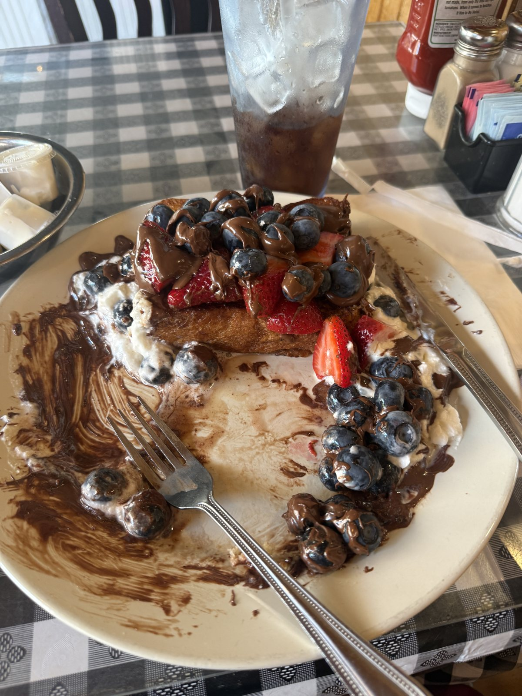
The best part about living in NYC is the food and living in a walkable city! Trust me I take advantage.
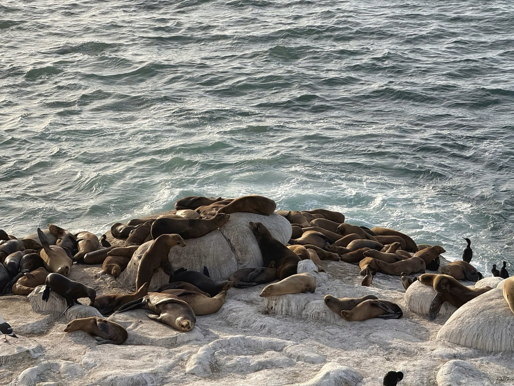
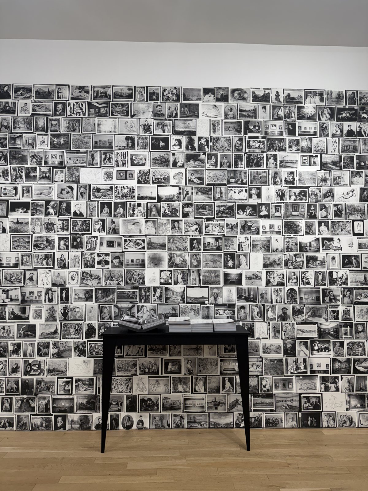
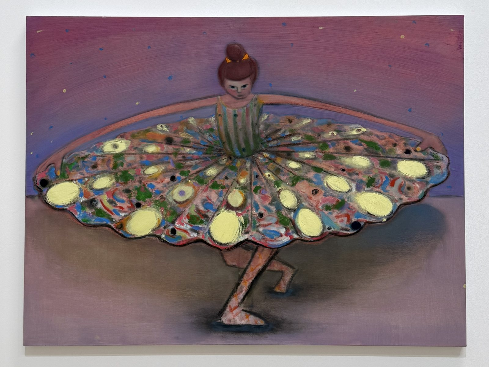
Photography gives me a reason to slow down and pay attention. And I love viewing other people’s art (all forms) and finding meaning in it.
More photography on InstagramQuote that has stuck with me
“If you want to be a better designer, don’t study design books. Study sculpture. Study paintings. Study cars, watches, philosophers, movies, fiction, music, people. Study the world.”